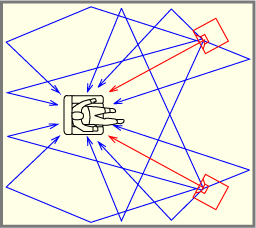
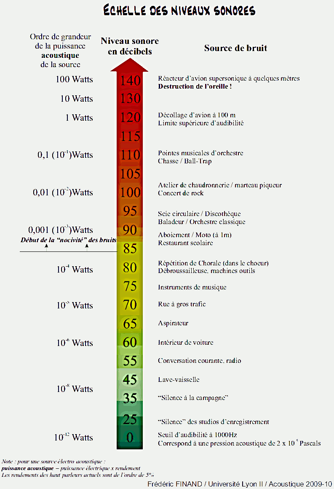

1) Introduction
L’Homme possède cinq sens qui lui permettent de s’orienter, de se déplacer, d’évoluer dans son environnement. Pour notre part, nous nous sommes principalement intéressés à l’ouïe, une fonction indispensable du corps humain. Actuellement on cherche de plus en plus à synthétiser un environnement sonore proche de celui que nous entendons.
En quoi le casque audio permet-il de créer un environnement sonore proche de la réalité ?
2) Le son
Qu'est ce que le son ? Comment est-il perçu ?
Le son est une vibration d'un milieu matériel (corps solide ou fluide qui prend toute la forme de son contenant comme l'eau liquide ou l'air). Il s’agit de vibrations mécaniques, les molécules du milieu matériel vont osciller autour d’une position d’équilibre :

Le son se propage sous forme d'ondes dans le matériel lorsque ce matériel subit une pression suivie d'une dépression. On peut comparer cette onde avec un ressort.


Mais les molécules ne vont pas se déplacer comme si c’était du vent pour l’air. Le son n’est donc pas un transport de matière mais d’énergie.
- Quand une onde rencontre un obstacle, son énergie est réfléchie, absorbée ou transmise.
- Une partie de l'énergie incidente est réfléchie et renvoyée dans la pièce. Cette partie va produire toute une série de perturbations sonores plus ou moins désirables (résonances, réverbération, échos).
- Une autre partie de l'énergie est absorbée. Elle disparaît en se transformant en chaleur. Rassurez-vous, la quantité de chaleur produite est très faible.
- L'énergie résiduelle est transmise à travers l'obstacle ou la paroi. C'est elle qui va fâcher vos voisins. La transmission n'est pas directe. Une fraction importante se propage dans les murs, sol et plafond avant d'émerger, souvent beaucoup plus loin.

La vitesse du son dépend de la :
- densité du fluide dans lequel il se propage, plus le fluide est dense, plus le son sera rapide.
- température plus la température est élevé, plus la vitesse du son augmente.
- compressibilité du fluide (la capacité du fluide à faire varier son volume lorsqu'il subit une pression).
La vitesse du son dépendant de ces trois variables, elle peut changer en fonction du fluide. Par exemple, dans de l'air, dans des conditions normales, la vitesse du son est d'environ 340m/s; alors que dans l'eau elle est d'environ 1 500m/s, soit 4 fois plus. Par contre, dans le vide, le son ne peut pas se propager, c'est en plaçant une source sonore de bruit dans une cloche à vide, vidée de son air, que l'on peut le constater.
Le son est relié à deux grandeurs:
- La fréquence, d'unité le Hertz (Hz), qui correspond au nombre de vibrations par seconde. Plus la fréquence est élevée, plus le son sera aigu. L'oreille humaine est capable de percevoir tous les sons ayant une fréquence entre 20Hz et 18 000Hz. Cet intervalle se réduit avec l'âge.
- L'intensité, d'unité bel (B). Cependant c'est sa sous-unité, le décibel(dB) qui est couramment utilisée. Elle correspond à la force du son; plus l'intensité sera importante, plus le son perçu sera fort. Contrairement à ce que l'on pourrait penser, lorsque le son perçu est deux fois plus fort, son intensité augmente seulement de 3 dB.
| Fréquence du son | Intensité du son |
|---|---|
 |
 |
Les vibrations se communiquent de molécules à d'autres de l'air, des molécules de l'air à celles des parois et des parois à nouveau à celles de l'air. C'est pour cela qu'il est dit que le son est "réfléchi". Dans une pièce donnée, la trajectoire du son n'est pas unique et linéaire : le son partant des sources "rebondit" sur les parois : murs, sol, plafond.
L'organe permettant de capter les sons est l'oreille, elle se compose de plusieurs parties :
- L’oreille externe : elle comprend le pavillon, constitué d’un cartilage recouvert de peau et présentant de nombreux replis, et le conduit auditif externe, petit tuyau de 2 à 4 cm de long tapissé d’une peau comprenant de nombreuses petites glandes qui sécrètent le cérumen et de poils le protégeant. Le son sera capté par cette oreille externe. Le pavillon de l'oreille a une forme précise (en parabole) qui lui permet de saisir les ondes sonores et de les amplifier
- L’oreille Moyenne : elle est séparée du conduit auditif externe par le tympan (membrane très fine). Elle comprend la caisse du tympan, la chaîne des osselets : marteau, enclume et étrier (ainsi nommés à cause de leur forme). Elle communique avec l’arrière bouche par la trompe d'eustache et avec l'oreille interne par la fenêtre ronde et ovale.
- L’oreille interne : Elle a une structure complexe. Elle comprend deux parties essentielles : Le labyrinthe osseux contenant les canaux semi-circulaires, le limaçon et le vestibule. Dans ce labyrinthe circule un liquide, la périlymphe. Le labyrinthe membraneux dans lequel se trouve un liquide, l'Endolymphe. On y trouve également les cellules auditives sensorielles ciliées.

Le fonctionnement des oreilles externe, moyenne et interne :
L’air qui se trouve au niveau du pavillon et du conduit auditif va entrer en vibration lors de l’émission d’un son, et va être dirigé jusqu’au tympan (1). Ce dernier va se mettre à vibrer (2), mettant en mouvement le marteau, qui met alors en mouvement l’enclume qui elle-même va entrainer un mouvement de l’étrier. Ces osselets transmettent et amplifient les vibrations (3). Tous ces phénomènes sont mécaniques qui mettent en mouvement le fluide qui se trouve dans la cochlée, et dans lequel baignent les cils des cellules sensorielles ciliées. L’ondulation des cils, mouvement mécanique, est transformée par la cellule en impulsions électriques (4). Ces impulsions électriques sont véhiculées jusqu’au cerveau par le nerf auditif (5).

3) L'écoute binaurale et monaurale
Dans le schéma ci-dessus, sont représentées en rouge au niveau du cerveau les informations venant d’une oreille et en bleu les informations venant de l’autre. Ce sont des zones différentes du cerveau qui reçoivent les informations des oreilles. Nous parlons d’écoute binaurale. Cette écoute binaurale nous permet de déterminer la direction et l’origine des sons. Lorsqu'un son est perçu, il est analysé et traité en passant par différentes étapes.
- les sons perçus par les oreilles sont transformés en informations monaurale et binaurale puis envoyés jusqu’au cerveau pour être traduits, l'information "délivre un monde perceptif individuel et, éventuellement, des commandes nerveuses pour déclencher et contrôler des expressions motrices spécifiques.” le cerveau suivant l’information délivrée peut déclencher des expressions motrices c’est à dire par exemple, déclencher une expression sur le visage ou placer les mains sur les oreilles si le son est beaucoup trop fort.
- Le cerveau prend en compte les mouvements de la tête lorsqu’il cherche la provenance d’un son.
-
L’écoute binaurale est meilleure que l'écoute monaurale (une seule oreille) pour :
- La localisation de sources simples ou multiples.
- Le renforcement de signaux d’une source choisie parmi un mélange de signaux de source incohérente (ex: bruit de fond dans une classe) c’est à dire que l'être humain est capable de se concentrer sur un signal sonore (un interlocuteur) même avec la présence d’un bruit de fond.
Il a en outre été établi qu'avec l'écoute binaurale un signal et bruit donnés peuvent être mieux séparés qu'avec
l'écoute monaurale.
Le fait qu’une personne puisse localiser la provenance d’un son est expliqué par des résonances dans le système
oreille externe - conduit auditif externe - tympan. Les résonances sont excitées différemment lorsque l'onde
sonore
arrive de différentes directions et/ou avec différentes courbures du front d'onde. Les fonctions de transfert
résultantes sont généralement différentes pour les deux filtres, causant ainsi des différences "interaurales" des
signaux de pression sonore aux deux tympans.
Ici ce que l’on veux dire c’est qu’une onde venant de derrière ne sera pas interprétée de la même façon par le
cerveau qu’une onde venant de devant. La façon dont l’onde est envoyée par le pavillon dans le conduit auditif est
aussi importante c’est une information en plus qui aide à localiser la provenance d’un son.
Toutes ces données sur le son et le fonctionnement de l’oreille humaine ont permis de développer des casques audio toujours plus performants
4) Le casque
Lorsque nous écoutons de la musique nous utilisons soit des enceintes soit des casques audio. Avec des enceintes il est facile de multiplier le nombre de sources audio. Dans une pièce, il suffit d’ajouter un haut-parleur.
Par exemple, pour écouter de la musique, des études ont été menées et préconisent deux sources :
Pour le cinéma, ce type de dispositif ne suffit plus. Plus de haut-parleurs sont installés, profitant de la capacité d'écoute binaurale, pour faire coïncider le lieu de départ du son avec l'image, pour une immersion plus grande dans le film.

Contrairement aux enceintes, un casque est restraint à deux oreillettes. Alors pourquoi nous intéresser plus aux casque qu'aux enceintes ?
En premier point nous avons choisi le casque car celui-ci est plus complexe que les enceintes et donc plus intéressant (pour recréer un environnement sonore proche de la réalité il suffit de savoir placer les enceintes en nombre nécessaire comme vu précédemment, alors que dans le casque, il ne peut y avoir que deux sources). La compacité du casque audio oblige l’emploi de haut-parleurs de très petit diamètre, capables de couvrir l’ensemble des fréquences du spectre audio, alors que les enceintes utilisent un filtre électronique (pour répartir les fréquences entre les haut-parleurs).
En deuxième point ce choix vient du fait que les casques audio offrent un résultat sensiblement meilleur. Alors que le casque diffuse le son vers l’oreille voire dans celle-ci, une enceinte diffuse le son dans toute la pièce, avec des pertes d’ondes sonore dû aux obstacles de la pièce (meuble, table, chaises, tableaux…). Il y a aussi l’immersion sonore que nous offre ces casques qui ne sont ni plus ni moins que des mini-enceintes portatives, immersion qui se doit d’être proche de la réalité.
Si le casque est performant aujourd'hui, c'est parce que la recherche a permis ces avancées technologiques.
Les casques, simples « mini enceintes » au départ, se sont vus accessoirisés pour éviter ce que l’on retrouve avec les enceintes, les perturbations par les sons extérieurs, la perte de son.
 |
 |
 |
 |
Les accessoires ne suffisant pas, il a été inséré une technologie électronique : en matière de qualité sonore, un casque peut être doté d’un « atténuateur d’ambiance » ; il émet une fréquence inverse à celle de l’environnement et vient contrecarrer les effets de cette dernière pour ne permettre à l’auditeur de n’entendre pratiquement que les sons émis par son appareil auquel le casque est relié.

Le casque anti-bruit actif est donc assez simple à fabriquer : on positionne un micro qui capte les bruits extérieurs au ras de la coque externe des oreillettes (un de chaque côté du casque). Un petit circuit électronique se charge de "renverser" puis de l'envoyer aux oreilles du porteur du casque. Cette onde opposée va rencontrer l'onde originelle du bruit, et les deux vont s'annuler. Dans le cas des casques audio à réduction de bruit que l'on connait aujourd'hui, l'onde sonore opposée au bruit est simplement ajoutée au son de la musique que l'on écoute. Elle annule ce bruit et l'auditeur n'entend plus que la musique.
L’avantage de ces systèmes de limitation du bruit environnant, est que l’auditeur n’a plus forcément envie de monter le volume pour pouvoir apprécier ce qu’il écoute, un niveau sonore trop élevé étant dangereux pour la santé.
Effectivement, lorsque nous avons parlé du son, nous avons parlé de son intensité. Elle est donnée sur une échelle qui permet de définir quel niveau de bruit est dangereux pour l’oreille humaine (les cils, trop malmenés cassent, et les cellules sensorielles ciliées ne peuvent plus envoyer l’information).
80 dB en exposition quotidienne est le seuil que le droit français retient pour que l’employeur soit obligé de mettre à disposition des salariés des protections (article R 4431-2 et R 4434-7 du code du travail). A partir de 85 dB en exposition quotidienne, il doit veiller que les salariés les portent.
La qualité du son choisi par l'auditeur a elle-même évoluée.
Un casque peut être :
- Mono : dans ce cas, les deux hauts parleurs présent dans le casque recoivent la même copie du son, ce qui signifie que les deux oreilles entendront exactement le même son.
- Stéréo (Son stéréophonique) : dans ce cas, le casque reçoit deux signaux totalement indépendants. Cela donne aussi la possibilité d'envoyer au casque le même son mais avec un delai entre les deux oreilles, ce qui permettra de repérer si le son vient de la droite ou de la gauche à l'aide de l'écoute binaurale. Pour qu'un casque puisse recevoir un son en stéréo, le son a dû d'abord être enregistré en stéréo aussi, pour cela, on a besoin de deux microphones. Pour que la localisation soit parfaite, il faut que chaque microphone représente une oreille, on doit donc mettre chaque microphone à environ 20 cm l'un de l'autre avec un angle d'environ 180°.
- Multi Haut-parleurs : ces casques contiennent plusieurs haut-parleurs avec filtres, comme pour les enceintes. Bien que le rendu sonore puisse être de bonne qualité, ces casques ont l’inconvénient d’être souvent assez coûteux, mais aussi plus volumineux que la normale et pas toujours plus efficaces qu’un bon casque stéréo équipé de solutions logicielles que nous allons voir en dessous.
Le casque peut aussi être doté d’un son Surround numérique reproduisant un champ sonore 3D avec une nouvelle direction de hauteur. Il est alors question de spatialisation du son.
5) Spatialisation du son
Le son Surround numérique reproduisant un champ sonore 3D, se développe et est considéré comme la prochaine révolution du casque audio. Il s’agit bien de délivrer du son binaural. Comment fonctionne cette technologie ?
Pour que les écouteurs puissent cependant transcrire le son binaural, il faut que ce dernier soit enregistré sur le même mode.
Qu'est-ce que l'enregistrement binaural ?
Vos oreilles et votre cerveau travaillent ensemble pour créer une représentation audio en 3D de votre environnement. L’AMBEO SMART HEADSET capture cette représentation avec des microphones de haute qualité montés dans chaque écouteur. Ces microphones utilisent le pavillon de vos oreilles pour reproduire l’image sonore 3D que vous entendez naturellement.

Ce casque permet d’entrer en immersion, cependant, il ne permet pas de restituer le son 3D à partir de tout type d’appareil, un « gamer » ne peut pas le brancher sur son ordinateur pour tirer un son 3D de ce dernier. C’est le microphone 3D intégré qui peut délivrer un son 3D.
Voici ce que l’on peut lire sur un site de vente du produit :
« L'Ambeo Smart de Sennheiser est un casque d'enregistrement binaural compact pour une utilisation mobile qui se distingue non seulement par son utilisation intuitive, mais aussi par sa conception spéciale pour des enregistrements 3D impressionnant. L'outil compact permet des prises de vue 3D immersives, détaillées et réalistes qui font revivre les souvenirs ou les partager avec des amis grâce aux microphones omnidirectionnels intégrés dans les écouteurs ».
Malheureusement, habituellement, le son que nous écoutons (musique, jeux vidéo, films, documentaires…) sont des sons faits pour être partagés, via des enceintes. La prise du son est donc faite pour des enceintes et non des casques audio.
Il suffirait de faire des prises de son pour casque audio 3D grâce à des microphones 3D comme ceux présentés ci-dessus.
Mais nous n’en sommes pas encore là. Les ingénieurs du son, la plupart du temps, ne mixent pas pour une restitution au casque. Mais pour des enceintes acoustiques.
6) Conclusion
Pour conclure avec toutes les recherches que nous avons faites ce TPE nous avons pu approfondir nos connaissances sur l’oreille le son et le casque. Nous avons pu montrer et prouver qu’il était quasi impossible de nos jours de recréer un environnement sonore proche de la réalité. En outre nous avons réussi à comprendre pourquoi et avons découvert que ce n’était pas peine perdue. Avec les nouvelles technologies futures les scientifiques n’auront aucun mal à proposer des appareils (casques) pouvant reproduire ce phénomène. Étant donné l’étendu du sujet, nous avons dû privilégier certaines information plus importantes. Ou encore chercher des expériences plutôt simples pour ne pas s’écarter de notre sujet.